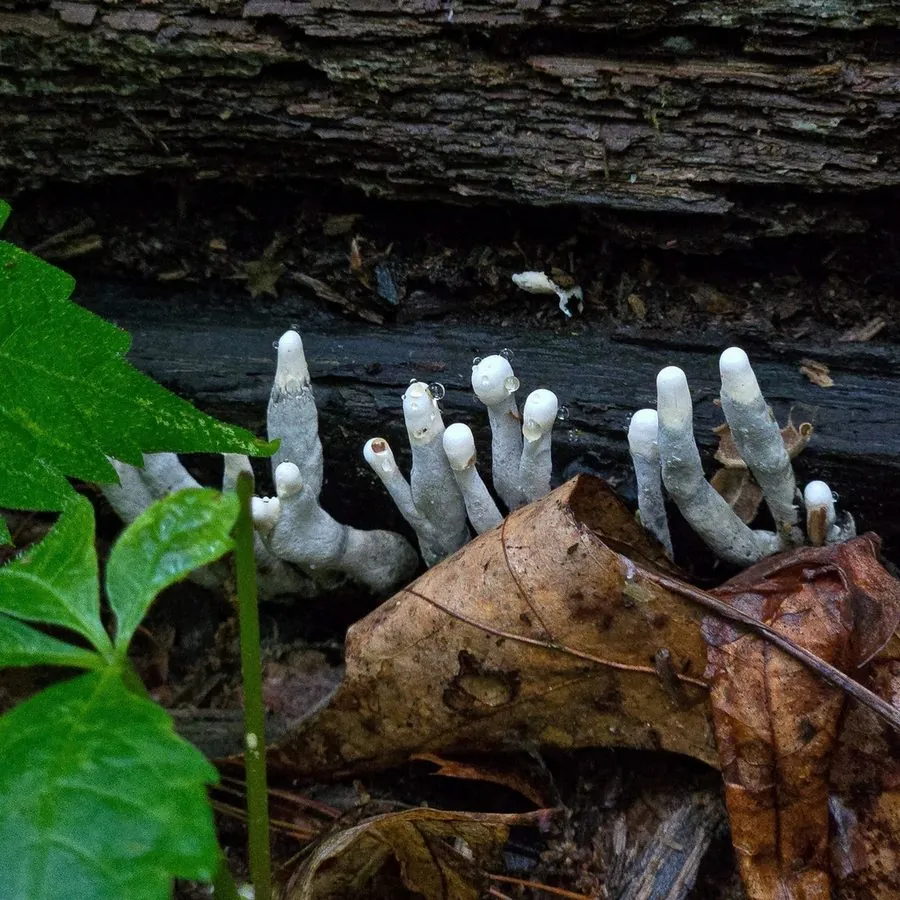

真菌 · 真菌界
多形炭角菌 Xylaria polymorpha

多形炭角菌的子座呈黑褐色棒状或指状，常成丛从腐木中伸出，形似枯黑的手指，因此得名“死人手指”，不可食用。
- 分类
- 门子囊菌门纲粪壳菌纲目炭角菌目科炭角菌科属炭角菌属
- 栖息环境
- 阔叶树的腐木、树桩与埋在地下的枯木，夏秋季出菇
- 地理分布
- 温带地区广泛分布，中国各地林区有记录
- 保护级别
- 暂无评估（IUCN 未评估，中国未列入重点保护名录）
物种志
多形炭角菌是子囊菌门炭角菌科的真菌，子座直立，呈棒状、指状或匙形，高 3–10 cm，粗 1–3 cm，常 2–5 个簇生。幼时子座灰白色至淡褐色，表面覆有白色粉末状的分生孢子；成熟后变成黑褐色至黑色，表面粗糙，密布细小的颗粒状突起，那是埋在子座内的子囊壳的开口。子囊孢子深褐色、纺锤形。
多形炭角菌生于阔叶树的腐木、树桩和埋在地下的枯木上，是常见的木腐真菌，在温带地区广泛分布，中国各地林区有记录，夏秋季出菇。它质地坚硬如炭，不能食用，也没有明显的药用价值。虽然名字和外形有些吓人，但它只是普通的分解者，靠分解木材中的木质素和纤维素获取营养，在森林物质循环中发挥作用。它的子座能存活数月，是野外观察炭角菌类的好材料。
形态与习性
- 子座棒状或指状，高 3–10 cm
- 颜色幼时灰白，成熟后黑褐色
- 表面粗糙，密布子囊壳开口
- 质地坚硬如炭，不能食用
- 生境阔叶树腐木与树桩
- 习性木腐真菌，分解木材
- 别名死人手指
趣味知识
- 多形炭角菌黑褐色的棒状子座从腐木里伸出，像枯黑的手指。
- 幼时表面覆着白色粉末，那是它的分生孢子。
- 它的子座质地坚硬如炭，完全不能食用。
- 虽然外形吓人，但它只是分解腐木的普通真菌。